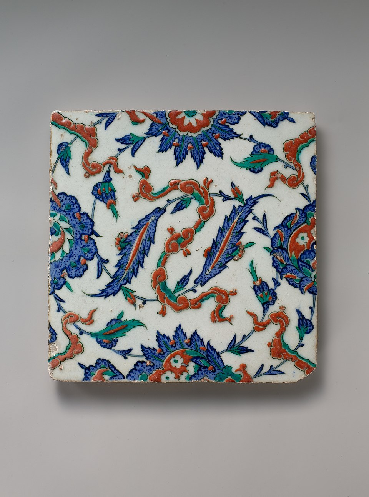

Gallery
Tile

Tile with floral and Cloud-band design, c.1578, Iznik Tile, Ottoman Empire, in the collection of the Metropolitan Museum of Art.
Tile with floral and Cloud-band design, c.1578, Iznik Tile, Ottoman Empire, in the collection of the Metropolitan Museum of Art.